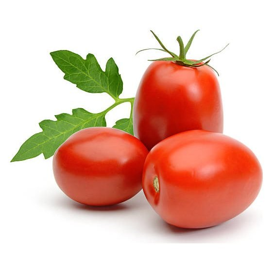

Sour-and-hot instant glass noodles (corn/sweet potato starch, bowl approx. 105 g)
Instant glass noodles in a bowl with a sour-and-hot Sichuan seasoning and a separate chili-oil sachet: the trend variant of instant noodles without meat broth.
Suan La Fen (酸辣粉) is the Sichuan speciality of chewy, translucent starch noodles in a broth of brewed vinegar, chili and Sichuan pepper.The bowl (approx.105 g) contains the noodle block and several seasoning sachets for vinegar sauce, chili oil and powder, which are only combined when hot water is added.Quality markers are springy noodles that do not stick together in the bowl, a balanced interplay of sourness and “mala” heat, and oil-tight sealed sachets.For the German market, complete FIC (LMIV) labelling including allergens (wheat from the vinegar seasoning, sesame), permitted additives and bowl material that complies for food contact all count.
Technical data
| Type | Sour-and-hot instant glass noodles (Suan La Fen), bowl with separate seasoning sachets |
|---|---|
| Noodle base | Corn and sweet potato starch, palm oil |
| Net content | approx.; 105 g per bowl |
| Seasoning sachets | Vinegar sauce, chili oil with Sichuan pepper, seasoning powder; artificial beef flavour in the powder |
| Preparation | Boiling water up to the marking, cover, steep 5-6 minutes, stir |
| Allergens | Wheat (vinegar made with wheat bran), sesame |
| Nutrition per 100 g | 1014 kJ / 242 kcal, fat 11.5 g, carbohydrates 28.5 g, salt 4.5 g |
| Shelf life | 10 months under normal storage |
| Customs tariff number (HS) | 19023010 |
EU standards and regulations
VO (EG) 178/2002General Food Law, traceabilityVO (EU) 1169/2011FIC Regulation: labelling, allergens, nutrition declarationVO (EG) 1333/2008Food additives (e.g.; E621, E635, E330, E412, E415) and class namesVO (EU) 2023/915Contaminants (incl.; aflatoxins in chili/peanuts, 3-MCPD and glycidyl esters in fats)VO (EG) 396/2005Maximum pesticide residue levels (chili, spices)VO (EG) 1935/2004Food contact materials (bowl, lid, sachets)
Goes well with
More products in this category
